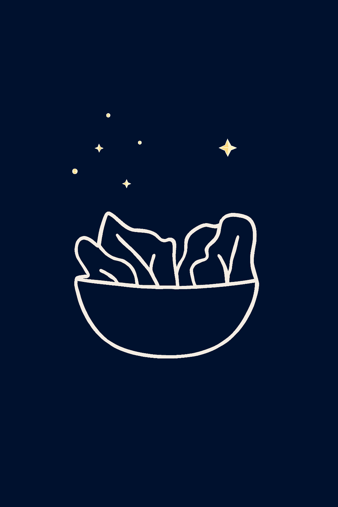

Tips voor gezond eten
Als iemand wil afvallen of een betere gezondheid wilt hebben is één van de belangrijkste dingen om gezond te eten, maar hoe doet iemand dat? Daar ga ik op deze pagina duidelijke uitleg over geven!
Het belangrijkste is voor gezond eten is gevarieerd eten. Variatie zorgt ervoor dat je, je niet gaat vervelen met steeds maar dezelfde maaltijden eten. Dit zorgt er ook voor dat je consistent gezond eet.
Ook is het belangrijk om genoeg fruit te eten voor extra vitamines.
T
Voor een volwassene wordt geadviseerd om minstens 2 fruitjes te eten op een dag.
Let op!
Fruit bevat ook suikers, dus te veel fruit eten is ook niet goed.
Ook is het belangrijk om genoeg groente te eten, de vitamines van alleen fruit is niet voldoende. Voor een volwassen persoon wordt aangraden om op zijn minst 250 gram groente te eten op een dag.


Noten zijn ook een goede bron van gezonde vetten en eiwitten. Eet een handje noten als tussendoortje of voeg ze toe aan je maaltijden voor extra smaak en voedingsstoffen.